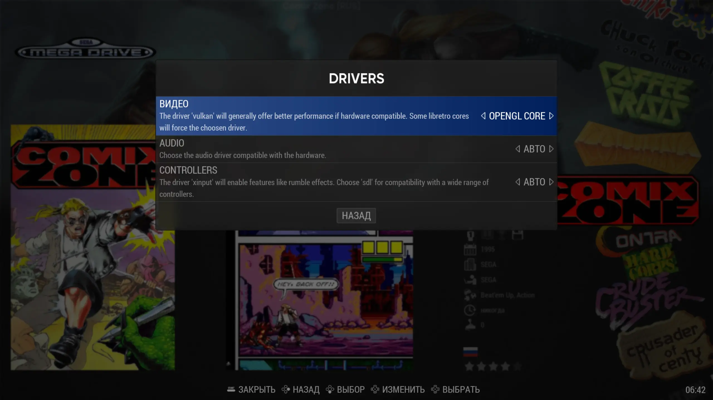

В данном наборе используются SLANG шейдеры, для их работы нужно поменять настройки.
SLANG шейдеры - новый и рекомендуемый формат. Совместимы с Vulkan, Direct3D, OpenGL Core.
GLSL шейдеры - совместимы с OpenGL.
Заходим в нужную систему, нажимаем "Select > Доп. настройки системы > Drivers > Видео - Vulkan (либо OpenGL Core, DirectX 9)"
У меня на Vulkan звук начинает потрескивать, поэтому я выбираю "OpenGL Core"
Далее "Select > Доп. настройки системы > Набор шейдеров - SONKUN 1080/1440/4K" (в зависимости от вашего разрешения экрана)
